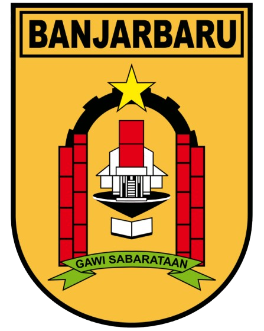

Jl. Panglima Batur No. 1, Banjarbaru
| No | Variabel | Tingkat | Skor |
|---|---|---|---|
| 1 | Visi & Misi Organisasi | Tingkat 3 - Terdefinisi | 15 |
| 2 | Tata Kelola Organisasi | Tingkat 2 - Berkembang | 10 |
| 3 | Manajemen SDM | Tingkat 4 - Terkelola | 20 |
| 4 | Kinerja Organisasi | Tingkat 3 - Terdefinisi | 15 |
| TOTAL SKOR | 55 | ||
Kesimpulan: SEDANG
Banjarbaru, 3 Oktober 2026
Kepala Perangkat Daerah
Fulan bin Fulan, S.Pd., M.M.
NIP. 19700101 199001 1 001